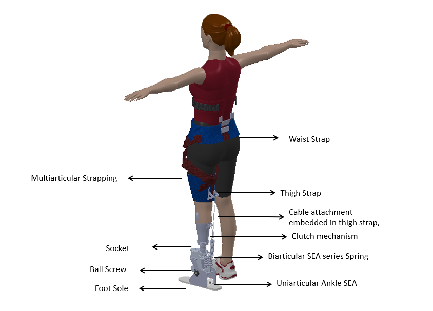
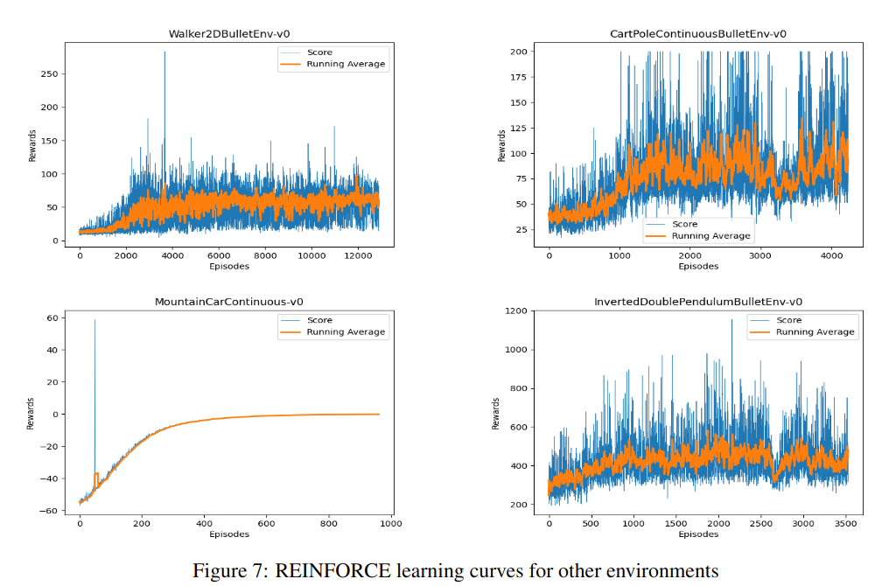
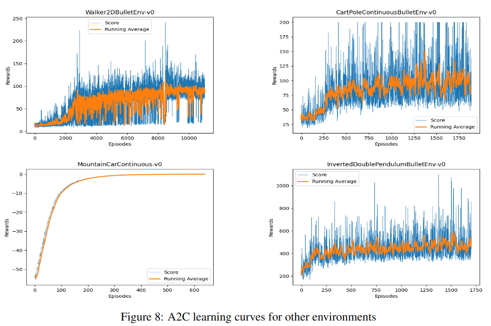
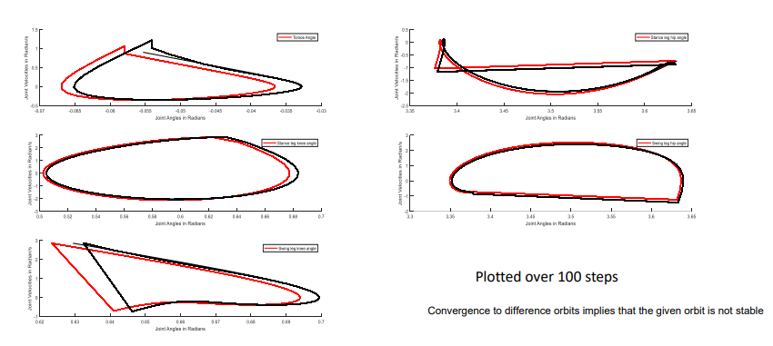

2023
[New] Real-Time Model-Free Deep Reinforcement Learning
for Force Control
of a Series Elastic Actuator
Ruturaj Sambhus*, Aydin Gokce*, Stephen Welch, Connor W. Herron, Alexander Leonessa
Accepted, IROS 2023
pdf bibtex
[New]
Real-World Deep Reinforcement Learning for Position Tracking of a Pendulum Driven by a Series Elastic
Actuator
Ruturaj Sambhus*, Aydin Gokce*, Stephen Welch*, Alexander Leonessa
Accepted, IMECE, 2023
Research Projects (selected | all)
2023
Deep Reinforcement Learning (DRL) for Force Control of Series Elastic Actuator
Terrestrial Robotics Engineering and Controls (TREC) Lab, Virginia Tech, Blacksburg
Objective:
The objective of the project was to apply deep reinforcement learning (DRL) techniques to develop a force
control strategy for a series elastic actuator (SEA) driving a pendulum system. The focus was on using data to
addressing
nonlinearities, such as difficult to identify stiction and backlash, to achieve accurate force trajectory
tracking.
Details
Approach and Results:
1. Problem Conceptualization:
- Formulated the reinforcement learning (RL) problem for force trajectory tracking of a pendulum driven by a
series elastic actuator.
- Considered the presence of nonlinearities, specifically stiction and backlash, in the system.
- Published a paper on arXiv discussing the conceptualization of the RL
problem.
2. Integration of DRL and IHMC Toolbox:
- Collaborated with a senior undergraduate student to integrate Python-based DRL using Ray RLlib with the
Java-based IHMC toolbox.
- Established networking between the DRL framework and the IHMC toolbox using socket communication
(UDP/TCP).
3. Engineering the RL Environment:
- Engineered the RL environment to ensure safety limits for the system, specifically bounded joint
positions,
to keep the pendulum within safe limits during learning episodes.
4. Hardware Learning and Performance:
- Successfully achieved hardware learning for force trajectory tracking up to a frequency of 0.35 Hz.
- Evaluated the performance using mean absolute error on a chirp signal.
- Demonstrated that the DRL approach outperformed a traditional PID controller by approximately 50% in terms
of mean absolute error.
- Ensured stability of the system throughout the learning process, avoiding any instability issues.
Overall, the research project focused on applying deep reinforcement learning techniques to address force
control challenges in a series elastic actuator driving a pendulum system. The integration of DRL with the
IHMC
toolbox and engineering of the RL environment resulted in successful hardware learning and improved
performance
compared to a PID controller.
2022
Deep Reinforcement Learning (DRL) for Real Robotic Arm Control
Terrestrial Robotics Engineering and Controls (TREC) Lab, Virginia Tech, Blacksburg
Objective:
The objective of the project was to achieve stable hardware learning performance for a 7-degree-of-freedom
(DOF)
velocity reacher task and torque reacher on a Franka Emika Panda robot arm. The task involved controlling the
task
space position by
using joint velocities and joint torques as actions respectively.
Details
Approach and Results:
1. Safety Bounds on Robot:
- Prioritized safe operation for velocity control by limiting the exploration through constrained
observation
space and action limits for velocity and torque control
2. Implementation of Velocity Control:
- Extended the PyBullet based Panda robot class to a gym based DRL environment, trained a velocity reacher
in
simulation
- Expanded the gym environment to control a real Panda arm and achieved from scratch DRL learned policies
with
safety
3. Implementation of Torque Control:
- Extended the existing low-level C++ code to incorporate torque control during the task and velocity
control
for reset, since reseting with torques would have needed a custom torque controller design due to joint
friction.
- Implemented a torque control-based 7-DOF reacher task using the PyBullet Physics Engine, trained using
Stable
Baselines 3 and Ray RLlib PPO and SAC algorithms.
4. Sim-to-Real Transfer:
- Estimated the joint friction by approximating with the deadzone in joint torque action space.
- Utilized the PyBullet Physics Engine to model the estimated friction and ensure a seamless transfer
without
requiring explicit sim-to-real
techniques.
Overall, the project focused on achieving stable hardware learning performance for a 7-DOF velocity reacher
task
on the Franka Emika Panda robot arm. The low-level C++ code extension enabled torque control during the task,
while velocity control was used for reset. By implementing a torque control-based reacher task and utilizing the
PyBullet Physics Engine, the project achieved successful sim-to-real transfer without requiring specific
techniques for this purpose. Additionally, joint friction estimation was performed to improve the accuracy and
realism of the simulation-to-real transfer.
2021
Model Matching H∞ Optimal Control of Haptic Interfaces for Rendering Multi-User
Interaction over Shared Virtual
Spring
Robotics Lab, Indian Institute of Technology, Bombay, Mumbai, India
Objective:
With an aim to define and improve transparency for shared virtual environments, used Model Matching Approach to
design H∞ controller for rendering interaction of human and position controlled robot over a shared virtual
massless spring using MATLAB/Simulink.
Details
Approach:
- Extended the model matching approach for rendering stiff virtual walls to render the interaction of two
users over the shared spring environment through a
centralized MIMO controller as well as two different localized MISO controllers for two haptic devices.
- Ideated two different approaches- centralized and localized approaches, compared the performance in terms
of transparency in MATLAB/Simulink
- Explored the effect of filters on bandwidth, the addition of dominance factor for users, and introdeuced
co-transparency based on accurate force reflection
- Designed the experimental testbed with Phantom Premium Haptic device for validation of controllers.
Results:
- Designed a H∞ controller based on Model Matching Approach for rendering interaction of human and
position-controlled robot over a shared virtual massless spring using MATLAB/Simulink.
- Implemented the controllers successfully on the Phantom Premium Haptic Device.
In summary, this project focuses on the control of haptic interfaces and presents a Model Matching Approach
for rendering multi-user interaction over a shared virtual spring. The designed H∞ controller enables the
interaction between a human and a position-controlled robot, while further enhancements enable interaction
between two humans. The successful implementation and integration of
the controllers on the Phantom Premium Haptic Device showcase their effectiveness.
2020
A Powered Assistive Device for Below Knee Amputees and Patients with Lower Limb
Muscle Weakness (Prosthesis and Orthosis)
Robotics Lab, Indian Institute of Technology, Bombay, Mumbai, India


Objective:
Performed the optimization of the Uniarticular, Biarticular (Passive and Active) SEA parameters for
minimum peak power by considering the effect of moment arm at the knee and the additional inertia of the
timing belt pulleys using MATLAB.
Details
Prosthesis
- Optimized the parameters of Uniarticular, Biarticular SEAs to minimize peak power, considering the
effect of moment arm at the knee and the additional inertia of the timing belt pulleys using MATLAB fmincon
based non-linear optimization.
- Conducted a sensitivity analysis to assess the robustness of the Uniarticular SEA's peak power and
energy to various parameters.
- Performed mechanical modifications on the series elastic actuator and sensor installation to enhance the
functionality of the uniarticular SEA for the designed
ankle prosthesis.
- Developed control algorithms (finite state control with position and impedance control) for the
uniarticular SEA.
Orthosis
- Conducted exhaustive literature review on the soft orthotic and prosthetic exoskeleton design
- Conceptualized a soft orthotic exoskeleton for lower limb weakness patients with bowden cable based
actuation and straps based on the
previously designed metallic exoskeleton with a goal to reduce the constraints on motion
- Rendered the 3-D SolidWorks models for the proposed design which was to be submitted for a funding
proposal
Overall, the project focused on optimizing and analyzing the parameters of SEAs, conducting sensitivity
analysis, performing mechanical modifications, and developing control algorithms. The results achieved
improvements in peak power efficiency and functionality of the uniarticular SEA for the ankle prosthesis.
A soft orthotic exoskeleton was conceptualized for lower limb weakness patients, with 3D SolidWorks models
created for a funding proposal.
2019
Modelling, Characterization and Design of Piezoelectric Ultrasonic Transducer
Advanced Manufacturing Processes Lab, Indian Institute of Technology, Bombay, Mumbai, India
Objective:
The main objective of the project was to develop a model of piezoelectric ultrasonic transducer in terms of
resonance frequencies, vibration modes on MATLAB and verify it experimentally by designing and fabricating a
representative transducer.
Details
Approach:
Modeling on MATLAB:
- Modeled the vibrations of piezoelectric ring and disc elements using the 1-, 2-, and 3-Dimensional
approximate matrix model approach.
- Modeled ultrasonic transducer extending the existing 1-D matrix model approach to 3-D approximate
approach using the previously developed models for individual elements.
- The developed model was advantageous in terms of detecting both radial and axial resonance frequencies
and predicting the dominant mode at resonance at lower computational costs than traditional FEM approach.
Design and Experiments:
- Designed and assembled the transducer by pre-stressing to high pressure (15 MPa), used microcontroller
to display real-time stress in piezoelectric rings during the assembly.
- Characterized piezoelectric ring, disc elements (various dimensions) and transducer in terms of
impedance using Impedance Analyzer.
- Generated the modal vibration data in terms of vibration velocity, amplitude, and mode shapes using an
out-of-plane Laser Doppler Vibrometer.
Electrical Hardware Development:
- Developed a high-frequency half bridge inverter circuit up to 2 MHz square wave switching frequency
tested at low voltages (up to 30 volts).
- Implemented Sine triangle PWM scheme for frequencies up to 500 Hz using microcontroller.
Results:
- The developed model provided an advantageous approach for detecting resonance frequencies and predicting
the dominant mode at lower computational costs compared to traditional Finite Element Method (FEM)
approaches.
- The designed and assembled transducer, along with the characterization tests, confirmed the validity of
the model and demonstrated the transducer's performance.
- The electrical hardware development, including the high-frequency half bridge inverter circuit and Sine
triangle PWM scheme, successfully achieved the desired switching frequencies and voltage control for the
transducer.
The project focused on the modeling, characterization, and design of a piezoelectric ultrasonic transducer. The
main objective was to develop a MATLAB model to predict resonance frequencies and vibration modes, which was
then verified through experimental fabrication of a representative transducer. The developed model offered
advantages in terms of computational efficiency compared to traditional methods. Additionally, the transducer
was designed, assembled, and characterized, confirming the validity of the model. Electrical hardware
components, including a high-frequency inverter circuit and PWM scheme, were successfully implemented. Overall,
the project contributed to the understanding, modelling and building of piezoelectric ultrasonic transducers.
2023
Real Time Handwritten Digit Recognition and Hand Tracking Volume Control (Code)
OpenCV Crash Course, Python, Machine Learning, Computer Vision, Image Processing, Gesture Recognition, Hand
- Programmed and trained a Convolutional Neural Network (CNN) using PyTorch on a dataset comprising
250,000 handwritten digit images, used OpenCV for real-time object detection
- Implemented a volume control system using a pre-trained MediaPipe module, which
accurately tracks hand movements using two fingers
Design of MPC for Gait Planning of Unitree A1 Quadrupedal Robot (Code)
Model Predictive Control
- Implemented event-based MPC to achieve trot gait for front and lateral walking based on
reduced order LIP model of the quadruped using MATLAB (benchmarked IEEE RAL paper)
- Extended the trot gait to pace gait by tuning the MPC based on SRB reduced order model
2022
From Scratch Implementation of REINFORCE, A2C for Continuous Control (Code)
Stochastic Approximation and Applications


- Programmed Deep RL algorithms REINFORCE and A2C for continuous control using PyTorch
- Evaluated performance on OpenAI Gym and PyBullet continuous control environments
- Analyzed sensitivity with respect to gradient clipping, evaluation batch size, neural network
Study on Residual Policy Learning and DQN discrete control from pixels (Code)
Deep Reinforcement Learning

- Modified the Gym Inverted Pendulum to include additional complexity in terms of damping
and reduction of timesteps, used StableBaselines3 to train RL controller for swingup
- Studied the learning improvements by combining the proportional controller with RL policy
2021
Hybrid Zero Dynamics
based Controller for Design of 2-D Gait for 5-DOF Bipedal robot
Feedback Control of Dynamic Legged Locomotion

- Utilized HZD-based trajectory optimization technique to design a 2D walking gait for a 5-DOF robot at 0.8
m/s modifying the given code for 3D walking with prescribed model and symbolic calculus .
- This involved formulating and solving MATLAB fmincon based optimization problem, defining decision
variables, cost function,
and constraints. Reported the optimal value of the cost function and decision variables in a comprehensive
written description.
- Simulated the closed-loop system performance using optimal boundary conditions and Bezier coefficients.
- Assessed the stability of the optimal gait and modified the MATLAB code accordingly.
Leadership
Project Manager, Team SHUNYA IIT Bombay for Solar Decathlon China 2018
Indian Institute of Technology Bombay, Mumbai, India and Dezhou, Shandong Province, China
Team SHUNYA is a group of 65 passionate students building a Solar Powered, Net Positive Energy
hybrid-modular house answering India’s growing energy and housing problems, which represented
INDIA at Solar Decathlon 2018 China by successfully constructing a full-scale Net Positive Energy
house in 25 days at the competition site in Dezhou, China. Awarded Best Participation.
Details
Approach and Results:
1. Problem Conceptualization:
- Formulated the reinforcement learning (RL) problem for force trajectory tracking of a pendulum driven by a
series elastic actuator.
- Considered the presence of nonlinearities, specifically stiction and backlash, in the system.
- Published a paper on arXiv discussing the conceptualization of the RL
problem.
2. Integration of DRL and IHMC Toolbox:
- Collaborated with a senior undergraduate student to integrate Python-based DRL using Ray RLlib with the
Java-based IHMC toolbox.
- Established networking between the DRL framework and the IHMC toolbox using socket communication
(UDP/TCP).
3. Engineering the RL Environment:
- Engineered the RL environment to ensure safety limits for the system, specifically bounded joint
positions,
to keep the pendulum within safe limits during learning episodes.
4. Hardware Learning and Performance:
- Successfully achieved hardware learning for force trajectory tracking up to a frequency of 0.35 Hz.
- Evaluated the performance using mean absolute error on a chirp signal.
- Demonstrated that the DRL approach outperformed a traditional PID controller by approximately 50% in terms
of mean absolute error.
- Ensured stability of the system throughout the learning process, avoiding any instability issues.
Overall, the research project focused on applying deep reinforcement learning techniques to address force
control challenges in a series elastic actuator driving a pendulum system. The integration of DRL with the
IHMC
toolbox and engineering of the RL environment resulted in successful hardware learning and improved
performance
compared to a PID controller.